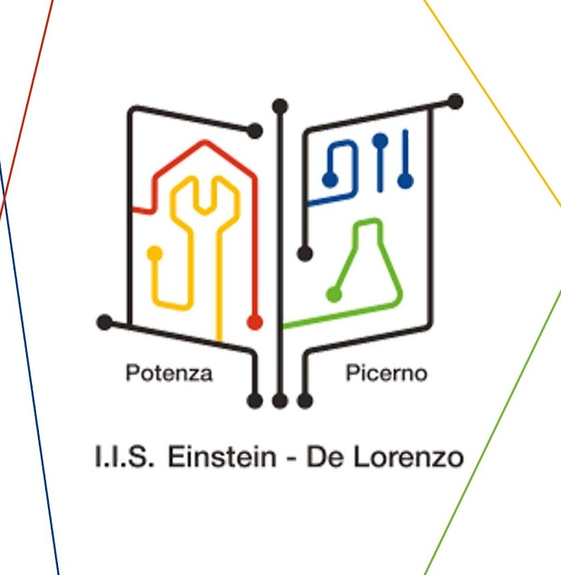

Benvenuti nel mio sito!
Mi chiamo Andrea Iannielli, ho 16 anni e frequento il quarto anno dell'Itis "Einstein-De Lorenzo"
Ho scelto questa scuola perchè mi piace molto l'informatica ed ho sempre sognato di lavorare in quell'ambito
Una delle mie passioni è il tennis, ci gioco a livello agonista da quando ero piccolo nell'ASD Tennis Avigliano

Oltre al tennis una delle mie più grandi passioni è il calcio, sono cresciuto tifando juve e il mio idolo è CR7

Il Green Deal europeo è la strategia di crescita dell'UE. Lanciato nel 2019,
consiste in un pacchetto di iniziative strategiche che hanno avviato l'UE sulla strada di una transizione verde, con l'obiettivo ultimo di raggiungere la neutralità climatica entro il 2050.
Sottolinea la necessità che tutti i settori di intervento contribuiscano alla lotta contro i cambiamenti climatici.
La strategia sostiene misure in vari settori economici tra cui l'energia, i trasporti, l'industria, l'agricoltura, la finanza sostenibile e altri ancora.